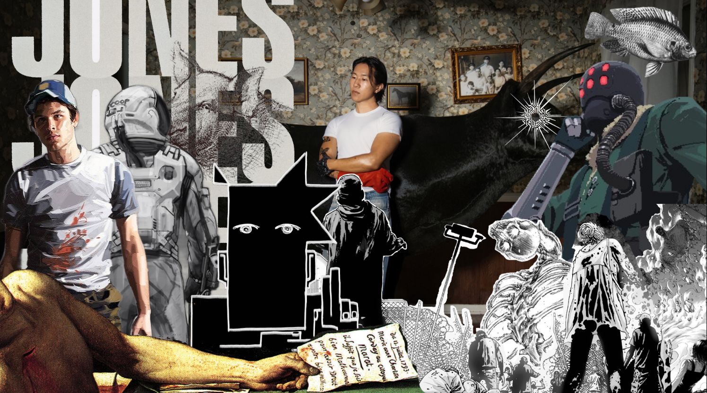
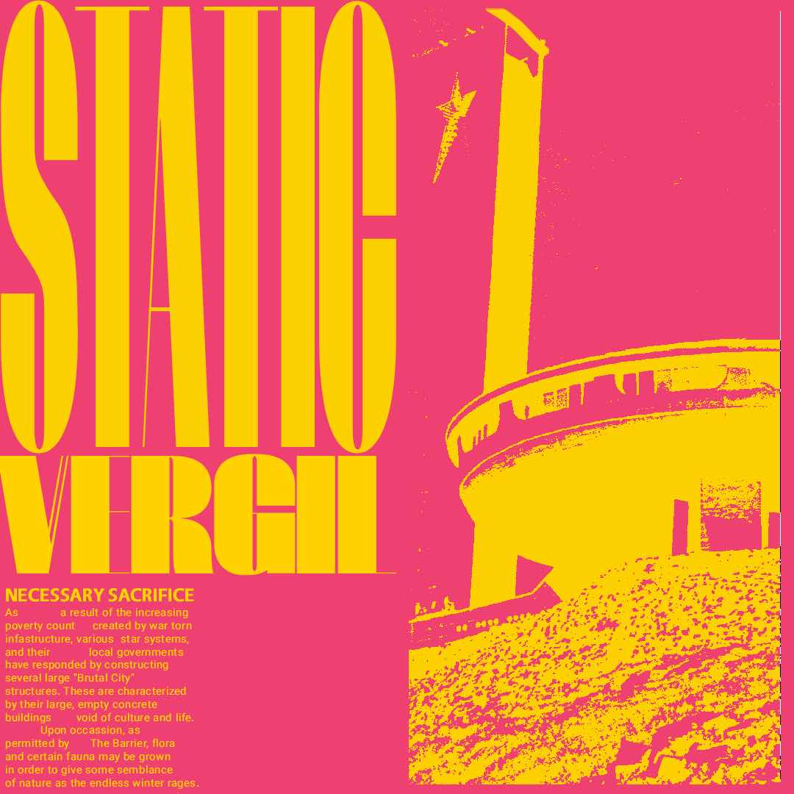

| Home | Photography | Design | About |
|---|
Photographer and Designer
|
 This was made with specifically using darker tones and an almost monochromatic color palette of grays and muted greens in mind to all blend together. There a focus placed on the man in the middle as everything goes around him in a sort of swing movement. Deathconsciousness is an album about a hyper awareness of death which is a theme all these medias portray. |
 An old conceptual piece for a story I'd written. The story has a large focus on reds, yellows, and brutalist architecture, thus the soviet-era building primarily focused on. |